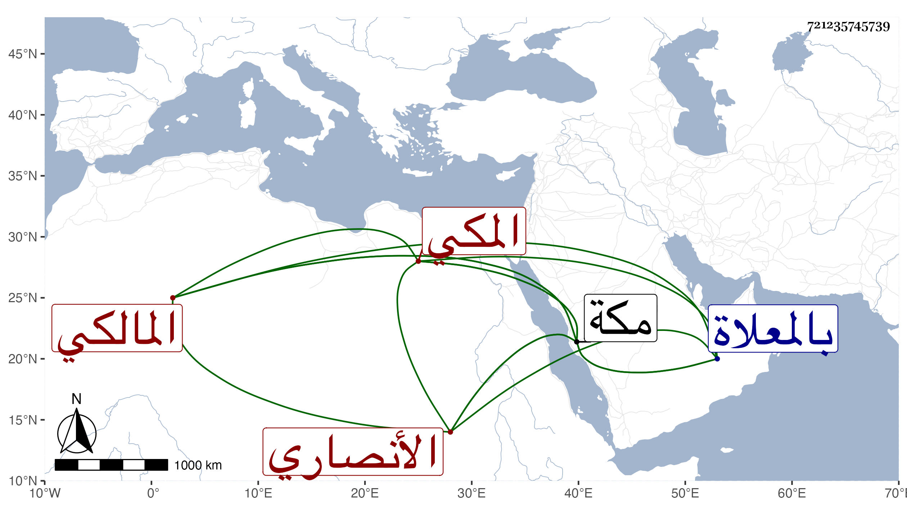

0902Sakhawi.DawLamic.ITO20230111-ara1.EIS1600.721235745739
Biography ID: 721235745739
أحمد بن عبد القادر أبي القسم بن أبي العباس أحمد بن محمد بن عبد المعطي الشهاب أبو العباس بن المحيوي الأنصاري المكي المالكي الآتي أبوه وولده أبو السعادات محمد . ولد في يوم الأحد ثاني عشر جمادى الأولى سنة ثلاث وأربعين وثمانمائة ، ورأيت من أرخه سنة أربع بمكة ، ونشأ بها في كنف والده فحفظ القرآن وصلى به على العادة وأربعي النووي والمختصرين الأصلي والفرعي لابن الحاجب وألفية ابن مالك وعرض على ابن الهمام والبلاطنسي وأبي السعادات ابن ظهيرة وأبي البقاء بن الضياء ، وغيرهم من أهل مكة والقادمين عليها ، وتلا بالقرآن تجويدا على علي الديروطي وأخذ الفقه والعربية عن والده والأصول عن أحمد ابن يونس وابن إمام الكاملية والزين خطاب والمحب أبي البركات الهيتمي والمنطق عن مظفر الدين الشيرازي ، وسمع من أبي الفتح المراغي وغيره وتصدر بالمسجد الحرام في الفقه والعربية والحديث ، وناب في القضاء وكان جم المحاسن مع صغر سنه . مات في آخر يوم الثلاثاء منتصف ربيع الأول سنة ثمان وستين وصلى عليه بعد صلاة الصبح من الغد عند باب الكعبة ودفن بالمعلاة وفجع به وتجرع غصته رحم الله شبابه .
